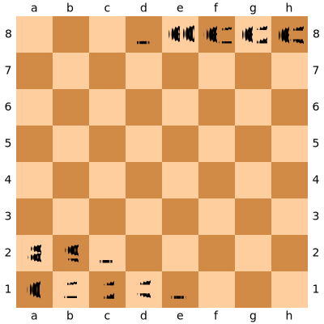
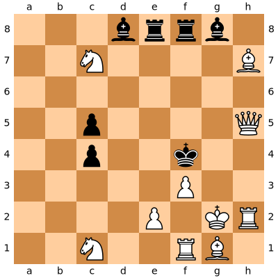

Standard for representing any chess position
rnbqkbnr/pppppppp/8/8/8/8/PPPPPPPP/RNBQKBNR w KQkq - 0 1Black's back row, then pawns:
rnbqkbnr/pppppppp/8/8/8/8/PPPPPPPP/RNBQKBNR w KQkq - 0 1Then 4 empty rows:
rnbqkbnr/pppppppp/8/8/8/8/PPPPPPPP/RNBQKBNR w KQkq - 0 1White's pieces:
rnbqkbnr/pppppppp/8/8/8/8/PPPPPPPP/RNBQKBNR w KQkq - 0 1rnbqkbnr/pppppppp/8/8/8/8/PPPPPPPP/RNBQKBNR w KQkq - 0 1White's turn to move:
rnbqkbnr/pppppppp/8/8/8/8/PPPPPPPP/RNBQKBNR w KQkq - 0 1Both players can castle king-side and queen-side:
rnbqkbnr/pppppppp/8/8/8/8/PPPPPPPP/RNBQKBNR w KQkq - 0 1Move clocks:
rnbqkbnr/pppppppp/8/8/8/8/PPPPPPPP/RNBQKBNR w KQkq - 0 1A FEN parser requires:
Protocol spoken between chess engines and UIs. Effectively every engine implements it.
> uci
< id name LaughablyBad
< uciok
> position startpos moves e2e4 e7e5
> go movetime 1000
< info depth 1
< info score cp 13 depth 1 nodes 13 time 15 pv f1b5
> stop
< bestmove g1f3A UCI implementation requires:
Chess engines are basically just:
Millions of times per second
The obvious solution:
pieces[8][8]64 bits can represent any one attribute of a chess board.
type Bitboard = u64;With enough of them, you get the entire board:
struct Board {
pawns: Bitboard[2],
bishops: Bitboard[2],
// ...
occupied: Bitboard[2],
}Take this position:
// board.occupied[Black] =
0 0 0 1 1 1 1 0
0 0 0 0 0 0 0 0
0 0 0 0 0 0 0 0
0 0 1 0 0 0 0 0
0 0 1 0 0 1 0 0
0 0 0 0 0 0 0 0
0 0 0 0 0 0 0 0
0 0 0 0 0 0 0 0
// board.rooks[White] | board.rooks[Black]
0 0 0 0 1 1 0 0
0 0 0 0 0 0 0 0
0 0 0 0 0 0 0 0
0 0 0 0 0 0 0 0
0 0 0 0 0 0 0 0
0 0 0 0 0 0 0 0
0 0 0 0 0 0 0 1
0 0 0 0 0 1 0 0
board.pawns[White].count_ones()let pawns = board.pawns[White];
for square in pawns.bits_set():
// ...
Each piece's available moves can be pre-computed:
// knightMoves[E4] =
0 0 0 0 0 0 0 0
0 0 0 0 0 0 0 0
0 0 0 1 0 1 0 0
0 0 1 0 0 0 1 0
0 0 0 0 0 0 0 0
0 0 1 0 0 0 1 0
0 0 0 1 0 1 0 0
0 0 0 0 0 0 0 0
Most tasks become basic bitwise operations:
func attackers(square: u8, board: Board) -> Bitboard {
(blackPawnAttacks[square] & board.pawns(White))
| (whitePawnAttacks[square] & board.pawns(White))
| (knightMoves[square] & board.knights())
| (bishopMoves[square] & (board.bishops() | board.queens()))
| (rookMoves[square] & (board.rooks() | board.queens()))
| (kingMoves[square] & board.kings())
}A bitboard implementation requires:
An easy way to test your move generator:
func perft(fen: string, depth: int) -> intGiven a position and the number of turns to search, how many nodes were encountered?
Proven results for different positions are readily available
From the initial position:
perft("", 1) == 20
perft("", 2) == 400
perft("", 3) == 8,902
perft("", 4) == 197,281
perft("", 5) == 4,865,609
perft("", 6) == 119,060,324
perft("", 7) == 3,195,901,860
Doubles as a great performance test!
Move generation dominates the run time of most engines